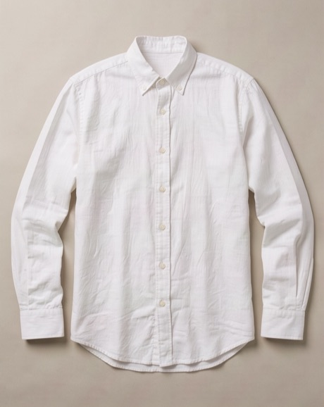
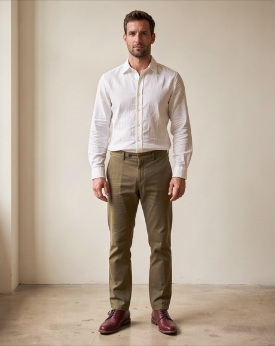

01
Bez podszewki, szwy z lamówką
Zamiast podszewki każdy szew jest obszyty bawełnianą lamówką. Od środka marynarka wygląda równie starannie jak z wierzchu, a w upale nic się nie klei.
Szanujemy Twoją prywatność
Używamy plików cookies niezbędnych do działania strony. Za Twoją zgodą korzystamy też z cookies analitycznych (Google Analytics), żeby wiedzieć, co ulepszać, i marketingowych (piksel Meta, Google Ads), żeby mierzyć skuteczność reklam. Możesz zaakceptować wszystkie, odrzucić wszystkie albo wybrać sam. W tej wersji demonstracyjnej nie wczytujemy żadnych narzędzi śledzących. Polityka prywatności.
1 / 7
Szyte w Łodzi
Marynarka bez podszewki z miękkimi ramionami i naszywanymi kieszeniami
4,9 na 5, przeczytaj 38 opinii
W magazynie. Zamów do 14:00 w dzień roboczy, a wyślemy tego samego dnia.
Płacisz bezpiecznie:
100% len europejski, prany z kamieniem. Gramatura 240 g/m². Guziki z drewna bukowego. Szwy wewnętrzne wykończone lamówką, bo marynarka nie ma podszewki.
Krój prosty, z luzem na cienki sweter. Długość 76 cm i szerokość ramion 47 cm w rozmiarze L. Model ma 184 cm wzrostu, 102 cm w klatce i nosi rozmiar L.
Tę marynarkę szyje Bogdan, krawiec miarowy od 31 lat. Jego imię znajdziesz na metce w kieszeni wewnętrznej. Pracownia: Osnowa, ul. Księży Młyn 14, 90-345 Łódź. Producent: Osnowa Pracownia sp. z o.o.
Zamówienia złożone do 14:00 w dzień roboczy wysyłamy tego samego dnia, późniejsze następnego dnia roboczego. Zwrot w ciągu 30 dni jest bezpłatny, pieniądze oddajemy w 3 dni robocze od dotarcia paczki. Szczegóły: dostawa i zwroty.
Z bliska
Kółko pokazuje powiększenie miejsca zaznaczonego punktem.
01
Zamiast podszewki każdy szew jest obszyty bawełnianą lamówką. Od środka marynarka wygląda równie starannie jak z wierzchu, a w upale nic się nie klei.
02
Dwa guziki z drewna bukowego przyszyte ręcznie na nóżce z nici. Nóżka daje luz, więc guzik łatwo zapiąć i nie wyrywa materiału.

03
Nie ma watowanych poduszek ani sztywnego płótna. Ramię układa się na Twoim barku, dzięki czemu marynarka leży jak sweter, a wygląda jak marynarka.
Z czego jest zrobiony
Gęsty len prany z kamieniem. Trzyma fason i nie grzeje.
Od środka równie starannie jak z wierzchu.
Bez watowanych poduszek i sztywnego płótna.
Telefon i portfel nie wypychają sylwetki.
Przyszyte ręcznie na nóżce z nici.
Porównanie
Porównanie przykładowe, bez nazw marek. Dane typowego modelu to średnia z metek, które oglądamy w pracowni.
| Cecha | Marynarka Prosna | Typowa letnia marynarka z sieciówki |
|---|---|---|
| Tkanina | Marynarka Prosna100% len, 240 g/m² | Typowy modelmieszanka z poliestrem |
| Podszewka | Marynarka Prosnabrak, szwy z lamówką | Typowy modelpoliestrowa, zatrzymuje ciepło |
| Ramiona | Marynarka Prosnamiękkie, bez wkładów | Typowy modelsztywne wkłady z waty |
| Guziki | Marynarka Prosnadrewno bukowe, na nóżce z nici | Typowy modelplastik |
| Skracanie rękawów | Marynarka Prosnabezpłatnie przy pierwszym zamówieniu | Typowy modelpłatne u krawca |
Opinie mogą wystawić tylko osoby, które kupiły ten produkt w naszym sklepie. Link wysyłamy po doręczeniu paczki. Publikujemy wszystkie oceny, także krytyczne.
Przy 30 stopniach dało się wytrzymać cały dzień. Szycie bez zarzutu, ramiona leżą tam, gdzie powinny.
Kupiony rozmiar: LWzrost: 183 cmZwykle nosi: L
Wpisałem w uwagach, żeby skrócić rękaw o 2 cm. Przyszła dopasowana, jakbym był u krawca.
Kupiony rozmiar: MWzrost: 176 cmZwykle nosi: M
Wiedziałem, że len się gniecie, ale po dniu w samochodzie widać to mocno. Wieczorem na wieszaku sporo wraca do formy.
Kupiony rozmiar: XLWzrost: 188 cmZwykle nosi: XL
Więcej o dobieraniu rozmiaru przeczytasz w poradniku jak dobrać rozmiar, kupując ubrania online.
Tak. Len 240 g/m² jest na tyle gęsty, że sam trzyma kształt klap i ramion. Podszewka w lnianej marynarce głównie grzeje.
Najważniejsza jest szerokość ramion. Zmierz ją w marynarce, którą już masz, i porównaj z tabelą wymiarów. Rękaw łatwo skrócić, ramion praktycznie się nie poprawia.
Tak, bezpłatnie przy pierwszym zamówieniu. Wpisz w uwagach, o ile centymetrów, albo zadzwoń, a zmierzymy to razem z Tobą.
Gniecie się, szczególnie po dniu w samochodzie. Wieczorem na wieszaku większość zagnieceń wraca do formy, a lekkie fałdy to urok lnu.
Ręcznie w 30°C albo w programie do wełny, bez wirowania. Możesz też oddać ją do czyszczenia chemicznego. Prasuj lekko wilgotną.
Stylizacja
Do marynarki dobierz białą Koszulę Bzura. Jesienią noś ją ze Swetrem San i wełnianymi Spodniami Rega.


Flanela wełniana, prosta nogawka
4,7, przeczytaj 22 opinie
Najniższa cena z 30 dni przed obniżką: 479 zł